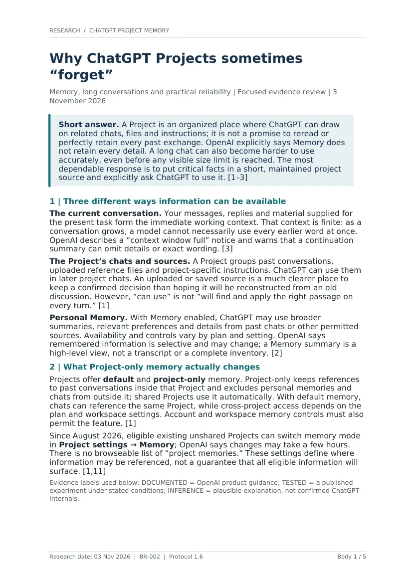

G
GPT-6High reasoning
BR-002 approvedApproved Q0 / abridged research scope
Why does ChatGPT sometimes fail to recall important information from earlier conversations within the same Project, and what can users realistically do to improve reliability?
Three secondary questions · consumer ChatGPT Projects · strict five-page substantive limit.

Original report · RB-only run
Practical evidence review
6 total PDF pages · A4